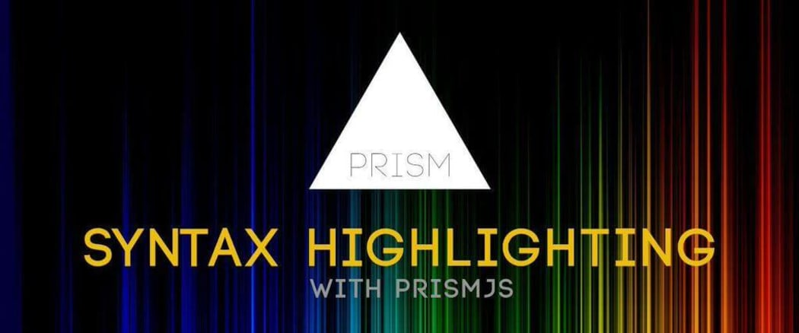
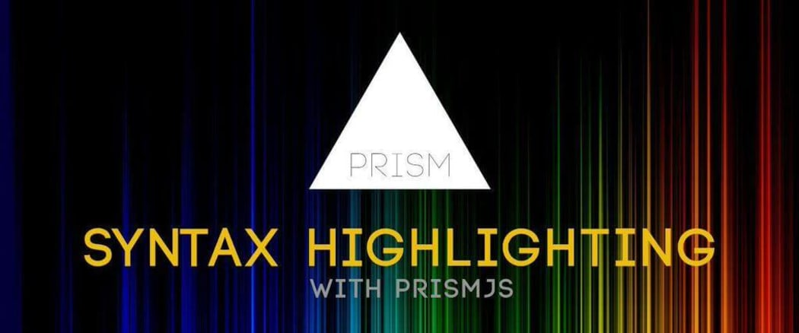

Sprinklr Internship 2020
(04-May to 26-June)
Author: Ajay Bhardwaj
What Did I Learn ??
CSS and SCSS
CSS is a language for specifying how documents are presented to users
SCSS is the more advanced version of CSS

Tailwind

Javascript
JavaScript is a scripting or programming language that allows you to implement complex features on web pages

React
React is a JavaScript library for building user interfaces.

GatsbyJS and Plugins
GatsbyJS is a blazing fast modern site generator for React.

Git and Github
Git is a distributed version control system designed to handle everything from small to very large projects with speed and efficiency.
GitHub is a Git repository hosting service

Graphql
GraphQL is an open-source data query and manipulation language for APIs

Main Project
Sprinklr Blogs
What does it do??
- A user can write a blog in either Markdown Format or an Online Editor.
- The blog will then be published online.
- The website will classify the blog into different categories (like Webpack, Machine Learning, Most Recent, Most Popular, etc.)
All Features
- Clean and Simple UI
- Lightweight website (extremely fast to load)
- Mobile Compatible
- Quick Navigation within Website
- Write Blogs with Markdown
- Write Blogs with Featured Rich Editor
- Create, Read, Update and Delete Blogs
- Schedule Blogs to be published later
- Syntax Highlighting for Code Snippets
- Search for content in Blogs
- Share Blogs on Social media
- Filtering Blogs using Google Analytics
- Completely Serverless
Tools and Technologies used

 

Challenges in Project
- Mobile Compatible UI
- Setting up Gatsby Configuration
- GraphQL queries
- Installing and configuring Plugins
- Setting up code syntax highlighting
- Integrating Algolia Search
- Integrating Prismic
- Google Analytics
Live Demo
Scope and Future of Project
- Upvotes on Blogs like Quora or Claps like Medium
- Rewarding Strategies
- Comments
- Gatsby Cloud with increment builds
- Improved UI for tablet devices
- Custom CMS
- Bookmarks and History using Authentication
- Improved Google Analytics
- Transitions like Page loading
The Team
- Chinmay Chaudhary (Mentor and Manager)
- Het Patel (Team-member and Guide)
- Ajay Bhardwaj (Product Engineering Intern)